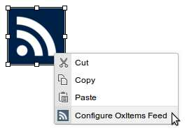

This plugin gives a user interface for configuring and embedding OxItems RSS Feeds in your page. For more information on OxItems and the output_newsfeed function, view the documentation.
-
Click on the OxItems icon.

-
A dialog will appear, giving you the full configuration options for the RSS feed.
- Channel: the unit for the desired RSS feed. This field must be filled in. The full list of units is available here.
- Number of values to output: maximum number of items to show in the feed.
- Details for output: details to display in the output for each result. You can choose one or more from the Link, Subtitle, Title, the Updated Elements of the result and a Special Link.
- Details for title of list: details to display in the title for each result. You can select one or more from Author, Contents, Link, Published date, Subtitle, Title, Updated ELements, a Special Link or choose to leave it Empty.
- Details for body of list: details to display in the body of each result. The same options as Details for title of list are available.
- Order: order the feed by one or more parameters, where ^ means ascending and v means descending. You can choose from Author, Content, result ID, Published date, Summary, Title and when the result was Updated.
- Encoding: encoding format for the feed. Best to leave it as UTF-8.
- Date Range: start and end date to search for items within, separated by commas (e.g. 2013,2014). Click the (?) icon to see the options.
- Empty news feed URL: URL to show if there are no elements in the feed.
The full details about each option can be found on the output_newsfeed Documentation.
-
When you are finished configuring your feed, click OK to embed it.

-
If you wish to make changes to the feed after it has been embedded, right-click the placeholder and click 'Configure OxItems Feed'.
